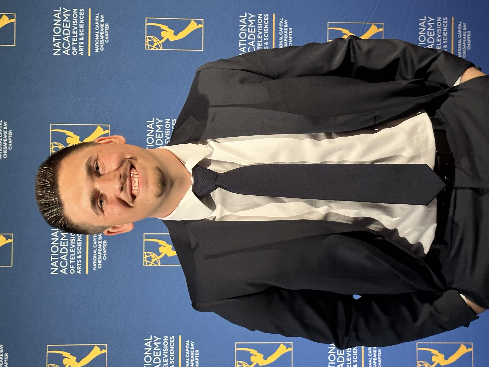

Play-By-Play Broadcaster
I served in a variety of roles as a media intern. I broadcasted home games and select road games for Tom Sox TV, the Tom Sox YouTube platform. Also, I conducted interviews and produced segments for their weekly YouTube show, Tom Sox Weekly. In addition, I ran the team’s social media during games and wrote game stories on an alternating basis with four other media interns.
Play-by-play and color commentary for Maryland baseball, field hockey, volleyball, and women's soccer for streaming on Big Ten Plus.
Play-by-play and color commentary for Maryland field hockey, football, men's basketball, men's soccer, softball, women's basketball, women's lacrosse, and wrestling. Also, I serve as the station's Graphics Director, where I create graphics for podcasts and each game we broadcast to post on Twitter/X.
Radio play-by-play and color commentary for the flagship station of Maryland baseball. I cut audio highlights of each game I called for the pregame show of the following game and post online.
I work as a sideline reporter covering Maryland baseball, field hockey, football, men's basketball, men's lacrosse, men's soccer, softball, and wrestling. I cut video to create a two-minute video package of each game I cover. I write script, create video packages and segments, and assist in producing our weekly studio show, The Left Bench, where I am also a rotational anchor.
I oversaw the technology aspect of the athletic program. I wrote and published a newsletter every week, which highlighted events from the previous week, showing what was coming up for the week, and interviews with student athletes. I published an athletic-based slideshow that was displayed on a monitor in the school. I gained experience doing PA announcing and interviewing student-athletes.